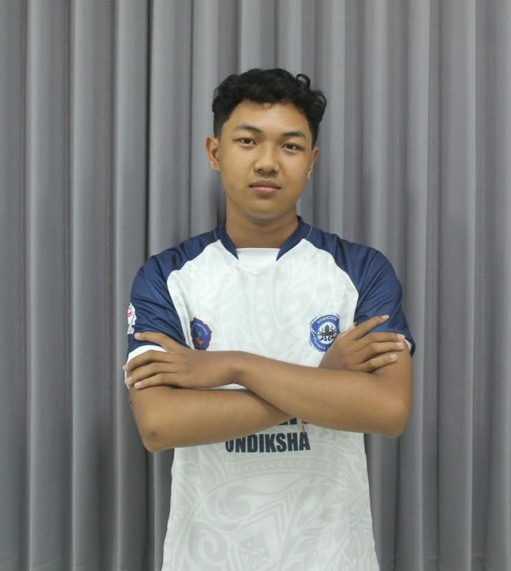
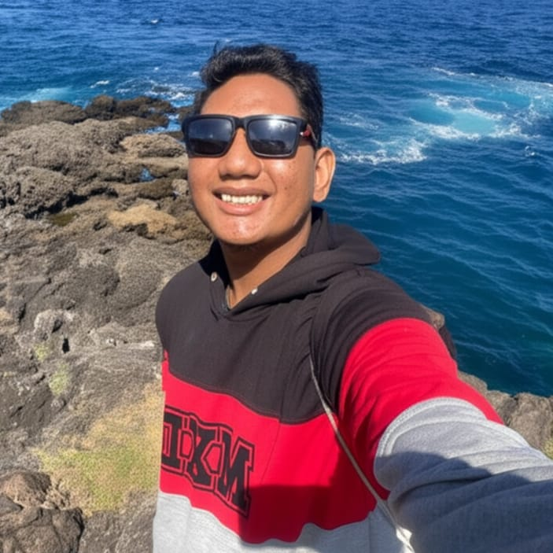
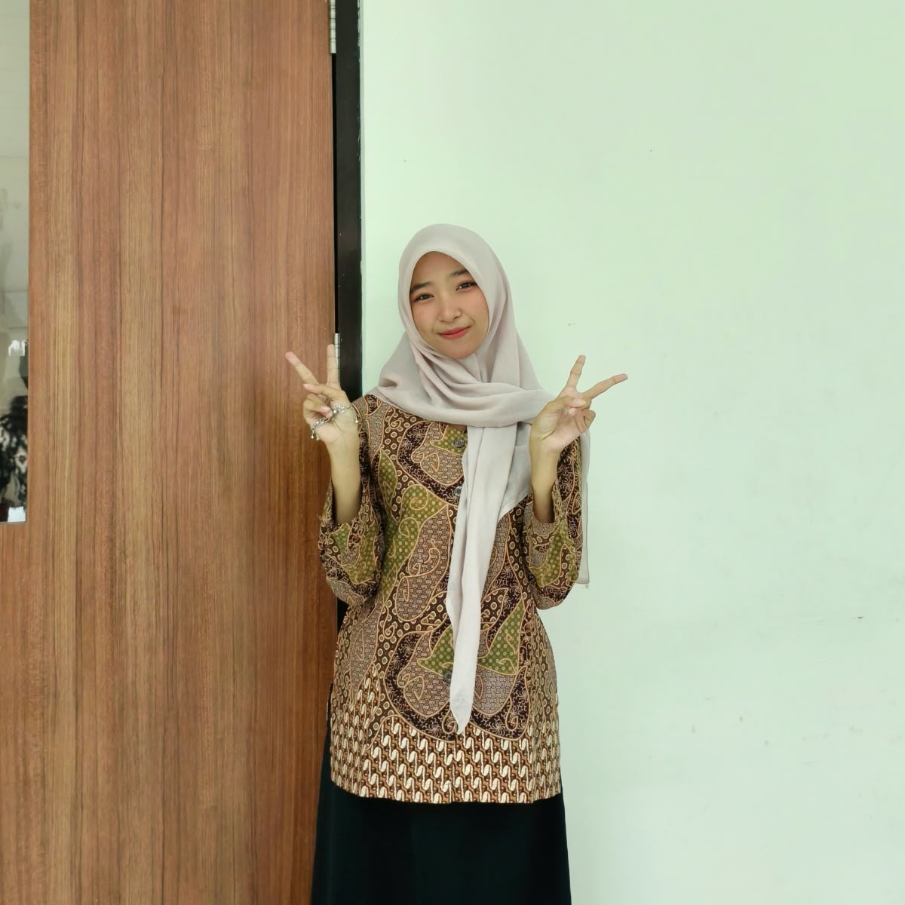
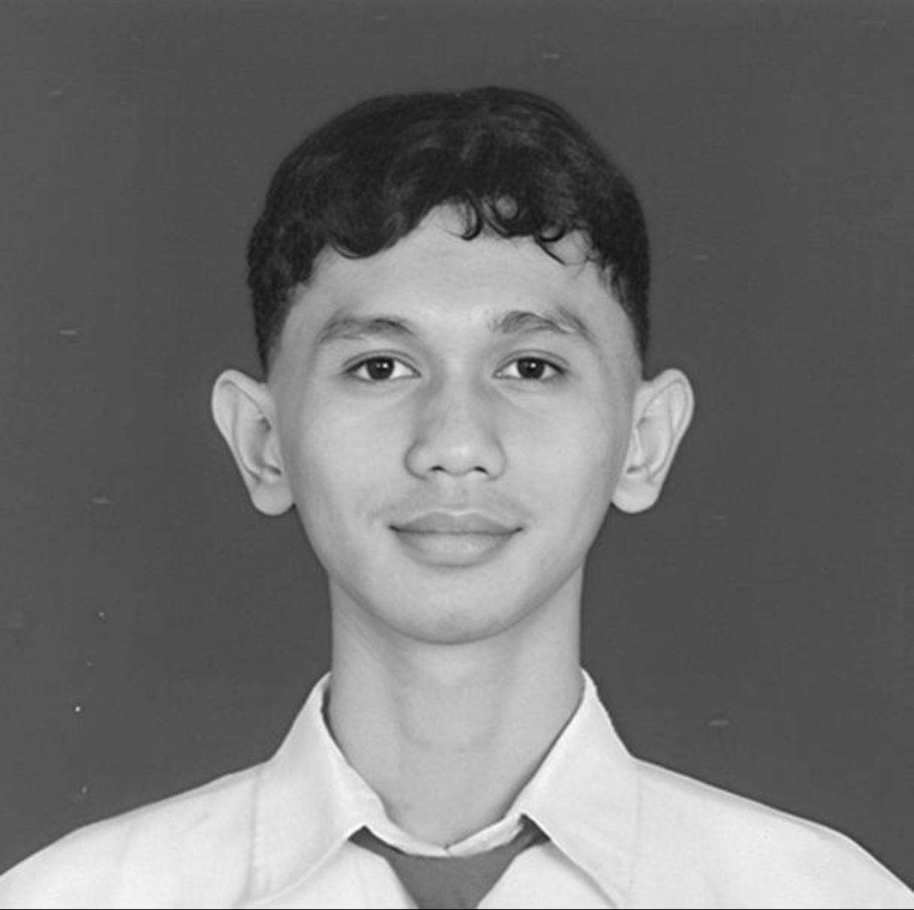

Meningkatkan pengetahuan
Memberikan edukasi dasar tentang konservasi laut, kebersihan pantai, pencemaran, dan ekosistem pesisir dengan bahasa yang mudah dipahami.
JAGA LAUT / TENTANG PROYEK
Jaga Laut adalah website edukasi statis yang membantu masyarakat memahami pentingnya menjaga laut dan wilayah pesisir, mengenali persoalan lingkungan, serta menemukan langkah sederhana untuk ikut melestarikannya.
 LAUT SEHAT
LAUT SEHAT01 / LATAR BELAKANG
Laut dan wilayah pesisir memiliki peran penting bagi kehidupan. Ekosistem seperti mangrove, padang lamun, dan terumbu karang menjadi habitat berbagai makhluk hidup serta mendukung kehidupan masyarakat. Namun, ekosistem tersebut menghadapi tekanan, antara lain sampah laut, pencemaran, perubahan penggunaan lahan, dan perubahan iklim.
Jaga Laut menyajikan informasi dasar, panduan praktis, dan artikel edukatif yang mudah dipahami. Website ini ditujukan bagi masyarakat umum, khususnya pelajar dan komunitas yang ingin mengenal konservasi laut dan pantai. Informasi dalam website ini merupakan bahan edukasi dan bukan pengganti arahan ahli atau pengelola konservasi di lapangan.
02 / TUJUAN PROYEK
Memberikan edukasi dasar tentang konservasi laut, kebersihan pantai, pencemaran, dan ekosistem pesisir dengan bahasa yang mudah dipahami.
Menyediakan panduan yang dapat diterapkan dalam kehidupan sehari-hari untuk mengurangi sampah dan membantu menjaga lingkungan laut.
Mengangkat isu konservasi laut melalui SDG 14 serta kaitannya dengan aksi terhadap perubahan iklim melalui SDG 13.
03 / ANGGOTA KELOMPOK

Nama: Putu Artha Wiguna
NIM:
2515091084
edukasi.html)tentang.html)
Nama: I Gede Panji Adikara Rendytama
NIM:
2515091024
panduan.html)
Nama: Naysheila Firyal Ramdani
NIM:
2515091066
index.html)
Nama: I Made Andhika Cahya Putra Aran Bakan
NIM: 2515091068
artikel.html)04 / IMPLEMENTASI
HTML5 digunakan untuk menyusun konten halaman, sedangkan CSS3 mengatur warna, tipografi, tata letak, dan tampilan responsif. Flexbox dan/atau CSS Grid dapat digunakan untuk menyusun elemen, sementara media queries membantu menyesuaikan tampilan pada desktop, tablet, dan smartphone.
Menyusun konten dengan elemen semantik seperti header, nav, main, section, article, dan footer.
Mengatur gaya, tata letak, dan penyesuaian tampilan melalui aturan CSS.
Mempublikasikan website statis agar dapat diakses secara daring.
05 / REFERENSI
Referensi berikut berkaitan dengan tujuan konservasi laut dan pantai serta isu perubahan iklim. Buka sumber aslinya untuk membaca informasi secara lengkap.